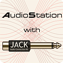
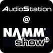
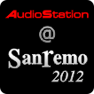
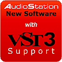
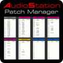
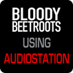

News

4 Aprile 2016
OS Update: Supporto del MIDI via Wi-Fi Network
AudioStation ora supporta il protocollo Wi-Fi MIDI Network.
Con questa nuova funzionalità è possibile controllare i plug-ins (o i software DAW) in esecuzione su AudioStation utilizzando come MIDI controller un iPad/iPhone and una applicazione MIDI controller che invia messaggi MIDI via Wi-Fi network utilizzando il protocollo UDP, come ad esempio MIDI Studio APP o molte altre.
1 Agosto 2015
AudioStation sbarca sul palco di Jovanotti!
Christian Rigano, tastierista di Lorenzo Jovanotti, Elisa, Tiziano Ferro e moltri altri importanti musicisti ha scelto AudioStation X64 per suonare dal vivo con strumenti ed effetti VST e riprodurre le parti audio campionate utilizzate nelle canzoni di Lorenzo Jovanotti. Vedi i dettagli nella pagina artisti.

1 Marzo 2015
Jack Audio Server per Audiostation
Per superare i limiti del driver ASIO - che non consente di utilizzare la scheda audio con due o più applicazioni ASIO contemporaneamente - AudioStation è stata equipaggiata con Jack Audio Server.
Grazie a questa funzionalità il VST Host di AudioStation puà essere utilizzato assieme ad altre applicazioni software, come Ableton Live, Pro Tools, Cubase, Nuendo, Sonar, Wavelab e molti altri, condividendo gli ingressi e le uscite audio di AudioStation tra le applicazioni in esecuzione.
Gli utenti più esperti potranno anche utilizzare JackControl (la patchbay audio di Jack Audio Server) per instradare liberamente i segnali audio tra le applicazioni.

23-26 Gennaio 2014
Vieni a scprire le nuove AudioStation X64, 3D AudioStation e un Nuovo Misterioso Apparecchio... al NAMM Show 2014! Ci trovi al Padiglione Hall A & Arena, stand 7410.
Ti aspettiamo!
01 Gennaio 2014
Nuova AudioStation X64: un nuovo passo avanti!
Buon 2014 a tutti!
Siamo felici ed orgogliosi di annunciare la nuova AudioStation X64, totalmente a 64-bit e con ulteriori interessanti funzioni...
Ecco le principali caratteristiche:
- OS di tipo embedded a 64-bit basato sul kernel di Microsoft Windows 7, espressamente creato e ottimizzato per l’elaborazione di segnali audio.
- CPU Intel i5 e i7 quad-core.
- Fino a 32GB di memoria.
- VST host-mixer a 64-bit con bridge a 32-bit, 100% compatibile con tutti i plugin VST a 64-bit e 32-bit.
- Supporto per i controller MIDI-USB e Ethernet.
- Controllabile in remoto e programmabile anche con iPad via WiFi (il segnale WiFi è generato direttamente da AudioStation - non è necessaria una connessione Internet o hardware aggiuntivo).
- Ancora più funzioni di controllo dei parametri dei plugins.
- Compatibile con tutti i software DAW e le applicazioni musicali per Windows 7.

2 Gennaio 2013
Novità 2013: il più grande aggiornamento che abbiamo mai rilasciato!
Buon anno a tutti!
Dopo 6 mesi di intenso lavoro, siamo felici di annunciare una nuova versione del software di AudioStation, con tantissime e interessanti nuove funzioni: mutli-in e multi-out, nuove funzioni di preload e supporto dei controller USB-MIDI, sono solo alcune di esse.
Ecco l'elenco completo:
- Multi-In: è utile per elaborare i segnali audio con plug-in multicanale (Surround Sound 5.1, 7.1 e altri). L’opzione Multi-In consente infatti di configurare i canali audio con 6, 8 o 10 ingressi audio e indirizzare i segnali ad altrettante uscite.
- Multiout: è utile per indirizzate a uscite separate i segnali di plug-in multitimbrici dotati di uscite multiple, ad esempio per elaborare e/o registrare distintamente i suoni di una batteria o altro.
- Performance Preload: consente di impostare il preload della Performance e le relative Patch con un solo click.
- Automatic Preload of Next Performance: è una impostazione globale per precaricare automaticamente la Performance successiva a quella in uso (e tutte le sue Patch), senza la necessità di ulteriori impostazioni.
- Preload on the fly...: mentre un set up è in uso è sufficiente indicare una nuova Performance e il preload inizierà automaticamente.
- Supporto per controller MIDI-USB: consente di collegare ad AudioStation qualsiasi controller MIDI-USB o Ethernet.
- MIDI bypass degli slot Insert VST: lo stato On/Off degli slot Insert VST ora può essere controllato anche via MIDI.
- Funzione AND per il controllo MIDI dei parametri del plugin: consente di definire un complesso insieme di cambiamenti per la regolazione dei parametri dei plug-in via MIDI.
- Funzione Toggle per il controllo MIDI dei parametri del plugin: cambia l’azione On/Off di pulsanti, interruttori a pedale e tasti da momentanea a permanente, consentendogli di svolgere On o Off alternativamente ad ogni pressione.
- Note Toggle: cambia l’azione On/Off dei tasti da momentanea a permanente, consentendogli di svolgere On o Off alternativamente ad ogni pressione.
- Linear Knob: consente di regolare le manopole trascinando il mouse in verticale (al posto del movimento circolare).
- Regolazione del Tempo con LiveControl: ora il Tempo può essere regolato anche con LiveControl.
- Elenco dei plugin modificabile: l'elenco dei plugin ora è contenuto in un un file facilmente modificabile.
Nuove funzioni introdotte con il precedente aggiornamento:
- Supporto VST3: consente di utilizzare anche i nuovi plugin VST3.
- Save All: è utile per salvare la Performance e le Patch di tutti canali utilizzati con un solo comando e con l stesso nome e numero di memoria.
- Continuous MIDI Clock: consente di inviare il segnale di MIDI Clock anche senza avviare il playback del player audio.

16 Gennaio 2012
Nemmeno il Festival di Sanremo ha resistito al “fascino” di AudioStation... Per riprodurre dal vivo i suoni utilizzati nei dischi dai vari musicisti, i tastieristi dell'orchestra hanno scelto di utilizzare AudioStation: è sufficiente installare i plug-in preferiti ed il gioco è fatto!

21 Novembre 2011
Utilizza i nuovi plug-in VST3!
Grazie alla nuova release software con integrazione dello standard VST3,
AudioStation supporta anche i nuovi plug-in basati su questo nuovo
protocollo con
caratteristiche avanzate e minore utilizzo di CPU power. E in aggiunta:
Save All salva
snapshot dell’intera console con un solo click e
Continuous MIDI Clock mantiene in sync qualsiasi apparecchio MIDI.

25 Agosto 2011
Riorganizza facilmente le tue catene di setup con AudioStation Patch Manager…
Con il nuovo software AudioStation Patch Manager è davvero facile e intuitivo riorganizzare l’ordine dei propri setup per adattarli ad ogni situazione… Grazie a un’interfaccia grafica semplice e intuitiva e all’operatività drag-and-drop, spostamenti, inserimenti, eliminazione, ordine crescente o decrescente, rename, preload e altre operazioni sulle patch possono essere eseguite facilmente con pochi click del mouse. Per informazioni e prezzo:

3 Giugno 2011
Anche I Bloody Beetrots hanno scelto AudioStation!
Una volta accesa sono bastati pochi minuti a Sir Bob Rifo, leader dei Bloody Beetrots, per decidere che AudioStation è veramente ciò di cui ha bisogno per portare dal vivo i suoni e gli effetti VST utilizzati in studio e realizzare facilmente i complessi setup per il loro tour live.
1 Giugno 2011
Dopo due ulteriori anni di sviluppo e test dalla presentazione della prima e già perfettamente funzionante versione di AudioStation — della quale sono state prodotte solo un centinaio di unità, consegnate unicamente a endorser e beta tester —
ecco la versione finale e pronta per la vendita di quello che può essere veramente definito il VST Player definitivo!